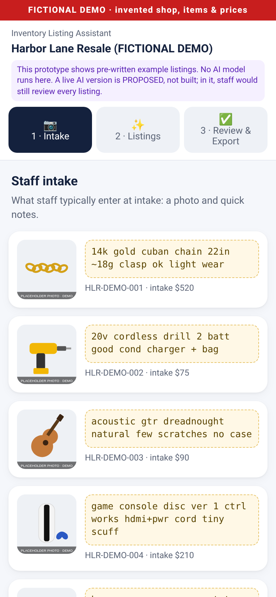
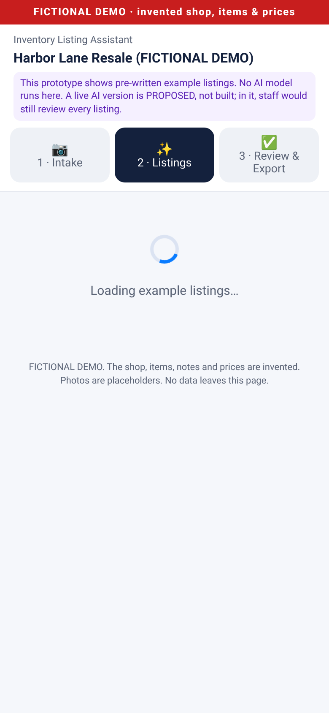
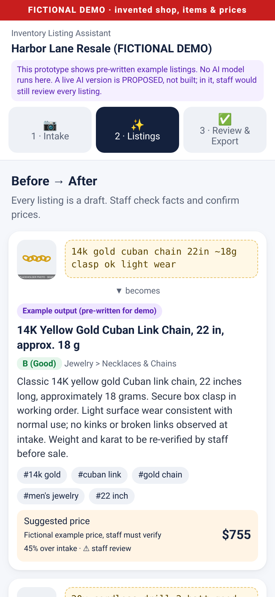
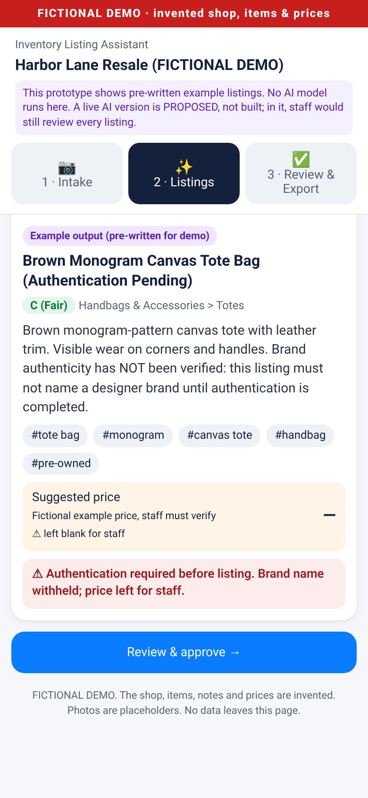
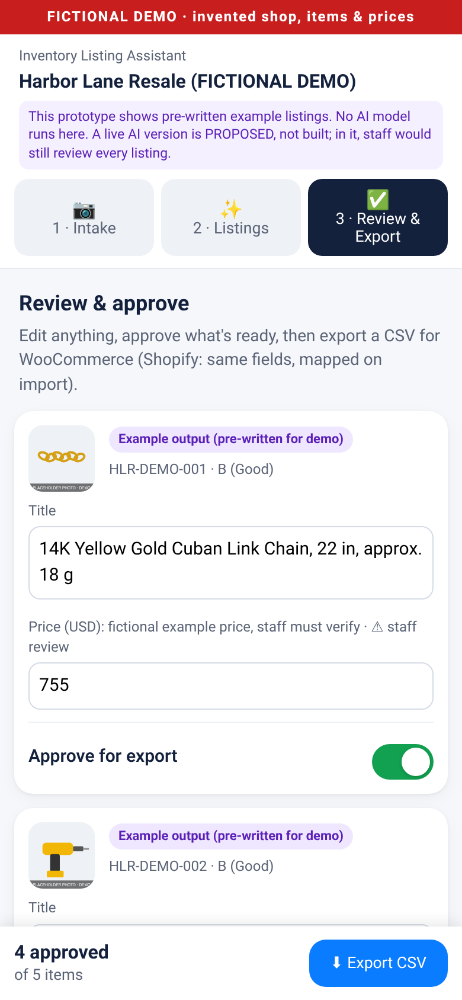
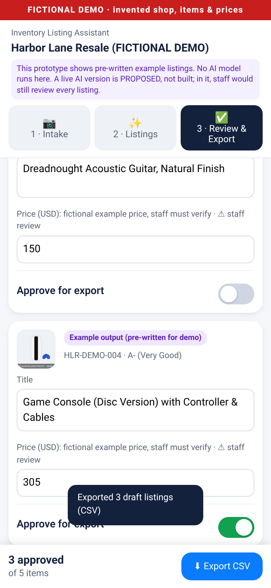

Case studies / 03
Case study 03 · Demonstration prototype
Inventory Intake & Listing Assistant
A single-file, mobile-friendly prototype showing how a resale shop's rough intake notes could become clean, staff-reviewed product listings and a WooCommerce-style CSV export.
The problem
Resale staff write rough notes at intake. Turning those into consistent titles, categories, condition grades, descriptions and tags takes time, and some items (for example, branded goods) must never be listed before a person has authenticated them. The prototype explores a flow where staff stay in control of every listing.
The flow
- Intake: fictional items with rough staff notes.
- Listings: a "Show example listings" button reveals pre-written example listings after a short animation. Nothing is generated.
- Review & export: staff edit titles and prices, approve or skip items, and export approved items to CSV in the browser. Nothing is uploaded.
One item, a monogram tote, is intentionally flagged "authentication required": its brand is withheld and it has no price, so it cannot be exported until approved. Each suggested price is a fixed markup over an invented intake cost, rounded to $5, and labeled "Fictional example price, staff must verify". The markup is not a pricing method.
Screens
Captured from a local headless-browser render at a 390×844 phone viewport. That render logged no external requests and no errors.






Feature status
| Feature | Status | Notes |
|---|---|---|
| Mobile intake → listings → review → export UI | Prototype | Single self-contained HTML file; works offline. |
| Listing content (title, category, grade, description, tags) | Prototype | Pre-written example output, typed by hand. Not AI-generated. |
| "Generating" step | Prototype | Simulated delay; no generation happens. |
| Editing, approve/skip, client-side CSV export | Prototype | Works in the browser; nothing is uploaded. |
| Authentication-required flag | Prototype | Pre-written for one fictional item. |
| AI listing generation (vision + text, structured output) | Proposed | Not built. |
| Workflow runner (e.g. n8n or a small Python service) | Proposed | Not built. |
| Pricing from shop rules or sold comparables | Proposed | Not built; staff would set or approve every price. |
| Publishing to WooCommerce or Shopify | Proposed | Not built; only after human approval. |
What a live version would need
Proposed None of the following exists in the prototype:
- An AI model call per item turning photos and notes into a draft listing, with structured output and checks that refuse to name a brand until authentication is confirmed.
- A workflow runner taking photos and notes from a form, shared folder or spreadsheet.
- Pricing inputs from the shop's own rules or sold-item comparisons, with staff setting or approving every price.
- A human approval step before anything is published, then export or push through the store's import CSV or API.
- Rules that exclude items still under any required hold period and keep customer and ID data out of listings.
- The shop's own AI-service account, logging, error alerts and cost limits.
Data provenance: the shop, SKUs, notes, costs and prices are invented. Product images are original placeholder drawings stamped as placeholders. No real shop, customer, employer or person appears.